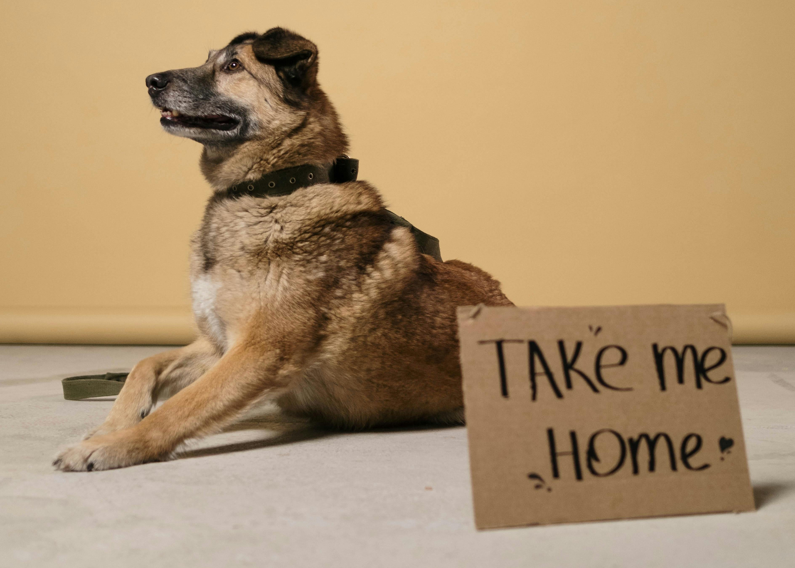

Every life deserves love, warmth, and a forever home.
What started as a small rescue mission has grown into a loving community dedicated to saving, healing, and rehoming pets in need. Every wagging tail and gentle purr reminds us why we began.

What began as a small rescue mission quickly turned into a heartfelt movement. With just a few volunteers and a deep love for animals, we started helping stray pets find safety and care.
Over the years, our community expanded. More families joined us, more animals found homes, and our mission became stronger than ever.
Today, we continue to rescue, rehabilitate, and rehome pets in need — building a future where every animal is loved and protected.
"Adopting from Little Hooman changed our lives forever. The team guided us through every step and made sure Bella was the perfect match for our family. Our home is n
"The team truly cares about every single pet. You can see the dedication and compassion in everything they do. We adopted Max six months ago, and he has brought so much joy and warmth into our lives."